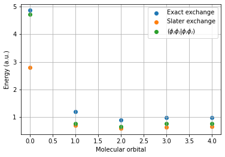

SCF optimization¶
import veloxchem as vlx
import numpy as np
import matplotlib.pyplot as plt
Setting up the system¶
mol_str = """
O 0.000000000000 0.000000000000 0.000000000000
H 0.000000000000 0.740848095288 0.582094932012
H 0.000000000000 -0.740848095288 0.582094932012
"""
molecule = vlx.Molecule.read_str(mol_str, units='angstrom')
basis = vlx.MolecularBasis.read(molecule, '6-31g')
nbas = vlx.MolecularBasis.get_dimensions_of_basis(basis, molecule)
nocc = molecule.number_of_electrons() // 2
V_nuc = molecule.nuclear_repulsion_energy()
print('Number of contracted basis functions:', nbas)
print('Number of doubly occupied molecular orbitals:', nocc)
print(f'Nuclear repulsion energy (in a.u.): {V_nuc : 14.12f}')
Number of contracted basis functions: 13
Number of doubly occupied molecular orbitals: 5
Nuclear repulsion energy (in a.u.): 9.343638157670
Reference calculation¶
scf_settings = {'conv_thresh': 1.0e-6}
method_settings = {'xcfun': 'slater', 'grid_level': 4}
scfdrv = vlx.ScfRestrictedDriver()
scfdrv.update_settings(scf_settings, method_settings)
scfdrv.compute(molecule, basis)
Self Consistent Field Driver Setup
====================================
Wave Function Model : Spin-Restricted Kohn-Sham
Initial Guess Model : Superposition of Atomic Densities
Convergence Accelerator : Two Level Direct Inversion of Iterative Subspace
Max. Number of Iterations : 50
Max. Number of Error Vectors : 10
Convergence Threshold : 1.0e-06
ERI Screening Scheme : Cauchy Schwarz + Density
ERI Screening Mode : Dynamic
ERI Screening Threshold : 1.0e-12
Linear Dependence Threshold : 1.0e-06
Exchange-Correlation Functional : SLATER
Molecular Grid Level : 4
* Info * Nuclear repulsion energy: 9.3436381577 a.u.
* Info * Molecular grid with 35884 points generated in 0.00 sec.
* Info * Overlap matrix computed in 0.00 sec.
* Info * Kinetic energy matrix computed in 0.00 sec.
* Info * Nuclear potential matrix computed in 0.00 sec.
* Info * Orthogonalization matrix computed in 0.00 sec.
* Info * SAD initial guess computed in 0.00 sec.
* Info * Starting Reduced Basis SCF calculation...
* Info * ...done. SCF energy in reduced basis set: -75.983338616414 a.u. Time: 0.02 sec.
* Info * Overlap matrix computed in 0.00 sec.
* Info * Kinetic energy matrix computed in 0.00 sec.
* Info * Nuclear potential matrix computed in 0.00 sec.
* Info * Orthogonalization matrix computed in 0.00 sec.
Iter. | Kohn-Sham Energy | Energy Change | Gradient Norm | Max. Gradient | Density Change
--------------------------------------------------------------------------------------------
1 -75.150048543941 0.0000000000 0.07684455 0.01397212 0.00000000
2 -75.149120620126 0.0009279238 0.12795976 0.02402629 0.04901510
3 -75.150580989550 -0.0014603694 0.00073574 0.00015078 0.02962419
4 -75.150581061056 -0.0000000715 0.00012978 0.00002856 0.00029238
5 -75.150581063103 -0.0000000020 0.00000260 0.00000057 0.00005365
6 -75.150581063104 -0.0000000000 0.00000056 0.00000010 0.00000082
* Info * SCF tensors written to file: scf.tensors.h5
*** SCF converged in 6 iterations. Time: 0.08 sec.
Spin-Restricted Kohn-Sham:
--------------------------
Total Energy : -75.1505810631 a.u.
Electronic Energy : -84.4942192208 a.u.
Nuclear Repulsion Energy : 9.3436381577 a.u.
------------------------------------
Gradient Norm : 0.0000005601 a.u.
Ground State Information
------------------------
Charge of Molecule : 0.0
Multiplicity (2S+1) : 1.0
Magnetic Quantum Number (M_S) : 0.0
Spin Restricted Orbitals
------------------------
Molecular Orbital No. 1:
--------------------------
Occupation: 2.0 Energy: -18.51511 a.u.
( 1 O 1s : -0.99)
Molecular Orbital No. 2:
--------------------------
Occupation: 2.0 Energy: -0.87529 a.u.
( 1 O 1s : 0.21) ( 1 O 2s : -0.45) ( 1 O 3s : -0.44)
( 1 O 1p0 : -0.17) ( 2 H 1s : -0.16) ( 3 H 1s : -0.16)
Molecular Orbital No. 3:
--------------------------
Occupation: 2.0 Energy: -0.42759 a.u.
( 1 O 1p-1: -0.52) ( 1 O 2p-1: -0.23) ( 2 H 1s : -0.26)
( 2 H 2s : -0.16) ( 3 H 1s : 0.26) ( 3 H 2s : 0.16)
Molecular Orbital No. 4:
--------------------------
Occupation: 2.0 Energy: -0.24182 a.u.
( 1 O 2s : -0.21) ( 1 O 3s : -0.40) ( 1 O 1p0 : 0.54)
( 1 O 2p0 : 0.38)
Molecular Orbital No. 5:
--------------------------
Occupation: 2.0 Energy: -0.17875 a.u.
( 1 O 1p+1: 0.64) ( 1 O 2p+1: 0.52)
Molecular Orbital No. 6:
--------------------------
Occupation: 0.0 Energy: 0.07527 a.u.
( 1 O 2s : -0.16) ( 1 O 3s : -1.10) ( 1 O 1p0 : -0.30)
( 1 O 2p0 : -0.43) ( 2 H 2s : 0.95) ( 3 H 2s : 0.95)
Molecular Orbital No. 7:
--------------------------
Occupation: 0.0 Energy: 0.16545 a.u.
( 1 O 1p-1: -0.43) ( 1 O 2p-1: -0.74) ( 2 H 2s : 1.31)
( 3 H 2s : -1.31)
Molecular Orbital No. 8:
--------------------------
Occupation: 0.0 Energy: 0.82813 a.u.
( 1 O 1p-1: 0.15) ( 1 O 2p-1: 0.63) ( 2 H 1s : -0.98)
( 2 H 2s : 0.60) ( 3 H 1s : 0.98) ( 3 H 2s : -0.60)
Molecular Orbital No. 9:
--------------------------
Occupation: 0.0 Energy: 0.87488 a.u.
( 1 O 1p+1: 0.96) ( 1 O 2p+1: -1.03)
Molecular Orbital No. 10:
--------------------------
Occupation: 0.0 Energy: 0.88179 a.u.
( 1 O 3s : 0.28) ( 1 O 1p0 : -0.93) ( 1 O 2p0 : 0.85)
( 2 H 1s : 0.44) ( 2 H 2s : -0.51) ( 3 H 1s : 0.44)
( 3 H 2s : -0.51)
Construction of molecular grid¶
grid_drv = vlx.veloxchemlib.GridDriver()
grid_drv.set_level(4) # default level in VeloxChem
mol_grid = grid_drv.generate(molecule)
weights = mol_grid.w_to_numpy()
Numerical integration of the XC kernel¶
den_drv = vlx.veloxchemlib.DensityGridDriver()
xctype = vlx.veloxchemlib.xcfun.lda # generate densities but no gradients of densities
def LDA_exchange(D):
F_xc = np.zeros((nbas,nbas))
den_array_format = np.array([D, D])
den_cpp_format = vlx.veloxchemlib.AODensityMatrix(den_array_format, vlx.veloxchemlib.denmat.rest)
den_grid = den_drv.generate(den_cpp_format, molecule, basis, mol_grid, xctype)
den_alpha = den_grid.density_aa_to_numpy(0)
den_beta = den_grid.density_bb_to_numpy(0)
n = den_alpha + den_beta # density on the molecular grid
v_xc = - (3 / np.pi)**(1/3) * n**(1/3)
E_xc = np.dot(weights, 0.75 * n * v_xc)
D = np.zeros((nbas,nbas)) # auxiliary density matrix for orbital pairs
for alpha in range(nbas):
for beta in range(alpha, nbas):
D[alpha, beta] = 1.0
den_array_format = np.array([D, D])
den_cpp_format = vlx.veloxchemlib.AODensityMatrix(den_array_format, vlx.veloxchemlib.denmat.rest)
den_grid = den_drv.generate(den_cpp_format, molecule, basis, mol_grid, xctype)
den_ao_pair = den_grid.density_aa_to_numpy(0)
F_xc[alpha,beta] = np.dot(weights, v_xc * den_ao_pair)
F_xc[beta,alpha] = F_xc[alpha,beta]
D[alpha, beta] = 0.0
return F_xc, E_xc
SCF procedure¶
max_iter = 50
conv_thresh = 1e-5
e_vecs = []
F_mats = []
# initial guess from core Hamiltonian
C = get_MO_coeff(h)
print("iter SCF energy LDA exchange Exact exchange Error norm")
for iter in range(max_iter):
D = np.einsum('ik,jk->ij', C[:, :nocc], C[:, :nocc])
J = np.einsum('ijkl,kl->ij', g, D)
F = h + 2*J # no exact exchange in the Fock matrix
F_xc, E_xc = LDA_exchange(D)
F += F_xc # add LDA exchange
F_mats.append(F)
E = np.einsum('ij,ij->', 2*h + 2*J, D) + V_nuc
E += E_xc
# determine exact exchange for comparison
K = np.einsum('ilkj,kl->ij', g, D)
E_exact_exchange = np.einsum('ij,ij->', -K, D)
# compute convergence metric
F_MO = np.einsum('ki,kl,lj->ij', C, F, C)
e_vecs.append(np.reshape(F_MO[:nocc, nocc:], -1))
error = np.linalg.norm(e_vecs[-1])
print(f'{iter:>2d} {E:18.8f} {E_xc:14.8f} {E_exact_exchange:16.8f} {error:12.2e}')
if error < conv_thresh:
print('SCF iterations converged!')
break
F = get_DIIS_fock(F_mats, e_vecs)
C = get_MO_coeff(F)
iter SCF energy LDA exchange Exact exchange Error norm
0 -68.60921388 -10.70568929 -11.74379335 1.85e+00
1 -67.48094965 -6.48294784 -7.34508108 2.00e+00
2 -75.10057850 -8.01556849 -8.84948129 2.01e-01
3 -75.12005286 -8.27392057 -9.10818173 2.09e-01
4 -75.09064441 -7.89842455 -8.72130626 2.84e-01
5 -75.14072670 -8.02050281 -8.84622111 1.17e-01
6 -75.15041056 -8.11935984 -8.94783220 1.52e-02
7 -75.15055003 -8.11250834 -8.94067169 6.63e-03
8 -75.15047023 -8.09812126 -8.92581752 1.24e-02
9 -75.15046267 -8.09780863 -8.92549481 1.28e-02
10 -75.15058034 -8.10664095 -8.93460362 9.98e-04
11 -75.15058086 -8.10707584 -8.93505921 5.17e-04
12 -75.15058106 -8.10746465 -8.93546072 2.65e-05
13 -75.15058106 -8.10742762 -8.93542234 2.03e-05
14 -75.15058106 -8.10744265 -8.93543782 8.19e-07
SCF iterations converged!
Self-interaction error¶
import matplotlib.pyplot as plt
F_xc_ii = []
J_ii = []
K_ii = []
g_iiii = []
for i in range(nocc):
F_xc_ii.append(np.einsum('a,b,ab->', C[:,i], C[:,i], F_xc))
K_ii.append(np.einsum('a,b,ab->', C[:,i], C[:,i], K))
g_iiii.append(np.einsum('a,b,c,d,abcd->', C[:,i], C[:,i], C[:,i], C[:,i], g))
plt.scatter(range(nocc), K_ii, label = 'Exact exchange')
plt.scatter(range(nocc), -np.array(F_xc_ii), label = 'Slater exchange')
plt.scatter(range(nocc), g_iiii, label = r'$(\phi_i\phi_i | \phi_i\phi_i)$')
plt.legend()
plt.grid(True)
plt.xlabel('Molecular orbital')
plt.ylabel('Energy (a.u.)')
plt.show()
